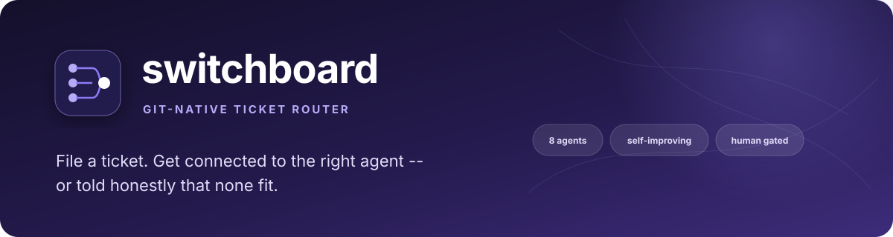

Portfolio project: deterministic-first routing with a model fallback
switchboard
A git-native ticket router for a fleet of specialist AI agents
File a ticket; get connected to the right agent, or told honestly that none fit. Routing starts with free, instant tag-overlap scoring. A model is consulted only when no tag overlaps at all, and only if you pass --ai or --jev. Every human correction is recorded, and the --ai router sees the 10 most recent ones.
See what is measuredView the repoWhat is not built
- 78 tests passing offline (counted locally)
- Latest CI run passed (checked)
- Tests mock the model (SWITCHBOARD_MOCK=1)
- Jev backend tested offline only
- Risk tiers are advisory
- Livery comparison: author's own, unverified

01
The problem
Manually deciding "which agent should handle this" doesn't scale past a handful of agents, and asking an LLM every single time is slow and costs money for decisions that are usually obvious.
Switchboard's router is deterministic by default (instant, free, tag-overlap matching), falls back to a model only when no tag overlaps at all (and only if you pass --jev or --ai), refuses to force a bad match either way, and records every time a human corrects it.
A router that always answers
A router that always answers trains you to stop checking the answer, so
route_deterministicreturnsNonewhen no tag overlaps instead of guessing.Confidence has to gate the action
Only medium or high AI confidence commits an assignment; low confidence is a recorded suggestion and the ticket stays open.
Fire-and-forget is a robustness gap
--runusesPopen(PID captured at start) through to aDispatchAttemptrecord, proven against a real failure, not mocked.
02
How it works
A ticket is routed by tag overlap. Only on zero overlap, and only if you asked, does a model get consulted. A human can override any decision, and dispatch prints the command unless you pass --run.
- New ticketa markdown file with a title, tags and a body
- Tag-overlap routerscore above zero: assign and record the rationale; no API call
- Zero overlap: Jev, then Claudeonly with
--jevor--ai; otherwise the ticket stays unrouted for a human - Human correction
rerouterecords why; the last 10 corrections are shown to the--airouter only - Dispatchprints the command by default;
--runexecutes it and records a durable attempt - Closeappended to
ledger.md, an append-only trail
Stages, one at a time
Stage 1 Deterministic router
Scores every registered agent by tag overlap and accepts any score above zero. No API call, no network.
A weak one-tag overlap is routed without a model check. The model is consulted for "no match", not for ambiguity.
Stage 2 Model fallback, only when asked
If no agent shares a single tag, the ticket stays unrouted unless you pass --jev or --ai. Jev can abstain and Claude may say none fit. High or medium confidence assigns; low confidence is recorded as a suggestion and leaves the ticket unassigned.
Stage 3 Corrections
reroute lets a human override any decision and permanently records why. The 10 most recent corrections are shown to the --ai router on later calls.
The deterministic router ignores corrections. There is no fine-tuning or retraining.
Stage 4 Dispatch and close
Dispatch composes the exact shell command (or, for a claude_code agent, a live session prompt) and prints it by default. --run executes it for real with a durable attempt record. Closing a ticket appends it to ledger.md.
Risk tiers are advisory: a medium or high tier prints a WARNING on --run and never blocks it.
03
What is measured
There is no routing-accuracy benchmark. What is checked is the size of the project and two dispatch attempts shown in the README.
Taken from the README header and the repository. The tests run offline with SWITCHBOARD_MOCK=1; real --ai, talk and debate calls need an API key.
| Item | Value |
|---|---|
| Registered agents | 8 (one markdown file each) |
| Runtimes | 2 (a command string, or a live claude_code session) |
| Tests | 78 |
| Python versions tested | 3.9 and 3.14 |
Caveat Counts of things that exist, not measures of routing quality. The 9-point self-comparison against Livery is the author's own and has not been independently verified.
Source: README header and "Running the tests"; agents/
Dispatch attempt records shown in the README as proof of the durable-attempt and live-runtime claims. Each is a single dispatch.
| Ticket and agent | Status | Detail |
|---|---|---|
0002, tpm-agent-os | failed | returncode 2: the agent's repo was not cloned locally, and the failure was recorded instead of a silent hang |
0006, research-assistant | succeeded | returncode 0, a real session id, cost_usd 0.15030852000000003; read ARCHITECTURE.md with its Read tool and answered correctly |
Caveat One dispatch each, run on 2026-08-31. The attempt JSON files are not committed; the records appear in the README, and ledger.md records the closing summary for ticket 0006.
Source: README "Real findings from building and testing this"; ledger.md
04
Architecture pattern
Pattern Router/Dispatcher. switchboard/router.py picks one agent for a ticket (route_deterministic, then optionally route_with_jev or route_with_ai), and switchboard/dispatch.py hands the ticket to that agent's runtime. Switchboard does the choosing and handing off; the registered agents do the work, and Switchboard does not run an agent loop or combine their outputs.
Routing starts with tag-overlap scoring and accepts any score above zero. A model is consulted only when no tag overlaps and the user passes --jev or --ai. Low model confidence is recorded as a suggestion and leaves the ticket unassigned. Dispatch itself is deterministic. It is a one-shot router, so there is no planning, no multi-step coordination between agents and no check on the quality of an agent's result.
- Ticketmarkdown plus tags
- Tag-overlap routerscore above zero: assign and record the rationale
- Jev router (opt-in)zero overlap and
--jev; typed choice with probabilities, can abstain - Claude router (opt-in)
--ai; sees the last 10 corrections; low confidence is a suggestion only - Human triage and
rerouteappends a correction tomemory/routing_corrections.jsonl - Dispatchprints by default;
--runrecords aDispatchAttemptwith pid and status ledger.mdappend-only record of closed tickets
05
Competencies demonstrated
Deterministic-first system design
Tag-overlap matching runs before any model call, so the common case is instant and free.
Graceful escalation
A model is consulted only when no tag overlaps and
--jevor--aiis passed, with an honest refusal path if nothing fits.Feedback-loop design
Every
rerouteis recorded; the 10 most recent are included in the--airouter's prompt.Independent implementation
Built from scratch against Livery's concept with no shared code.
Honest self-assessment
The Livery comparison is the author's own and unverified, and it tries to state where this is behind.
06
What is not built or not verified yet
Taken from the repository's own README and its known limits. This is part of the pitch: the gaps are known, written down and not rounded away.
- limit
A model is rarely consulted
It runs only on zero tag overlap and only with
--aior--jev. That means "no match", not a judgement of ambiguity, so a weak one-tag overlap is routed without a model check. - not verified
Jev backend: offline only
Tested with mock fixtures and stub clients. Live Jev behavior was verified on the standalone benchmark in
jev-agent-router, not through Switchboard. No live Switchboard + Jev run has been done. - limit
Risk tiers only warn
A
risk_tierof medium or high prints aWARNINGon--run; it never blocks execution. - limit
Correction memory is partial
Only the last 10 corrections reach the
--airouter's prompt. The deterministic router ignores them, and there is no fine-tuning or retraining. - limit
Debate is one model
The two-persona
debatemode is one model playing both sides, not independent agents or runtimes. - limit
One-shot router
No planning, no multi-step coordination between agents and no check on the quality of an agent's result.
- limit
One real live runtime
A single real adapter (
claude -p). Codex, Cursor, LM Studio and Ollama would each need their own verified adapter. - not verified
Comparison with Livery
The table is the author's own and has not been independently verified against Livery's current behavior.
- not built
More schedule shapes
Cron beyond "fixed time(s), daily" raises a clear error instead of guessing.
07
Roadmap
- DoneAutomatic routing (deterministic plus AI fallback) and routing-correction memory
- DoneDurable dispatch attempts and concurrency-safe ticket creation
- DoneTalk mode, persona-adapted debate, scheduling (declared, rendered, installable behind
--apply) and notifications - DoneA live
claude_coderuntime adapter, proven with a real dispatch - Not doneRuntime breadth beyond Claude Code: one real adapter beats four guessed ones
- Not doneCron beyond "fixed time(s), daily"